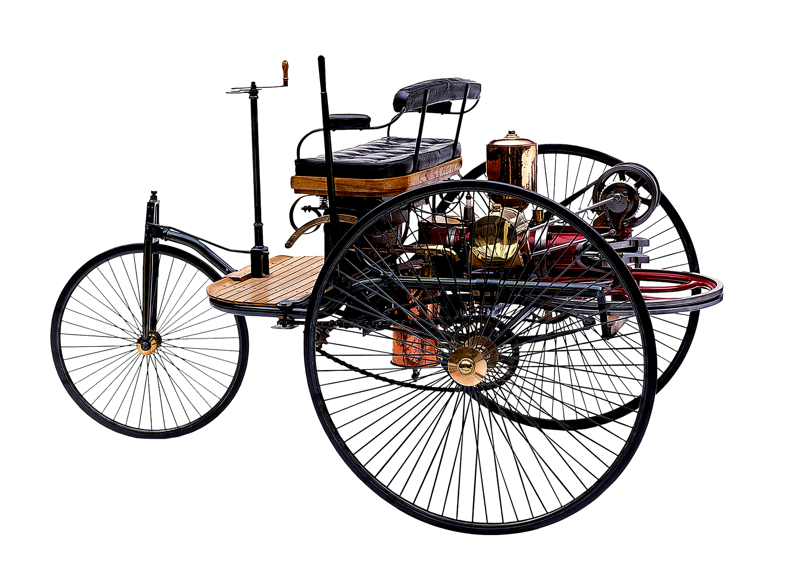

As the car lovers we are, this website was created to introduce people to this whole world of cars and show them why we get so excited when we hear the sound of a starting engine. If you want to know more about cars or take your first steps inside this world, we are pleased to welcome yo to your home, were we are going to explain you this world and its wonders.
The first steps...
The world's first car with an internal combustion engine is the Benz Patent-Motorwagen, built by Carl Benz in 1885 and patented on January 29, 1886. It was a gasoline-powered tricycle, considered the first vehicle specifically designed to be powered by an engine, marking the beginning of the automotive era.

Almost a century and a half later
Who would had thought that the tricycle of Carl Benz started one of the most important movements in the entire world, leading to the reation of absolute beasts of speed and marvels of engineering. Lets review some of the most legendary cars human hands have creates.
Hypercars
koenigsegg Jesko Absolut
This is one of the world's most extreme and fastest production hypercars, designed specifically to break top speed records. Only 125 units were manufactured globally, with a base price of around US$3 million that exceeds US$3.5 million with customizations. It accelerates from 0 to 100 km/h in approximately 2.5 to 2.79 seconds, an absolute madness of speed.
specs
- Engine:5.0-liter twin-turbo V8 that delivers 1,600 hp using E85 biofuel.
- Power: Estimated at 532km (Theoretical).
- Top speed: Estimated at 532km (Theoretical).
- Transmission: 9-speed Light Speed Transmission (LST).
Bugatti Chiron
The Bugatti Chiron is one of the most exclusive and powerful hypercars in the world. Equipped with an 8-liter, quad-turbocharged W16 engine, it can accelerate from 0 to 100 km/h in just 2.4 seconds. Its base price ranges from €2.4 to €3 million, reaching up to $5 million for special editions.
specs
- Engine: W16, 8.0 liters with 4 turbos.
- Power: 1,600 horsepower (hp) when running on E85 fuel. If conventional gasoline is used, the engine produces 1,280 hp.
- Top speed: Limited to 420 km/h, with variants like the Super Sport 300+ exceeding 490 km/h.
- Transmission: 7-speed dual-clutch automatic transmission (DSG).
Hennessey Venom F5
The Hennessey Venom F5 is an American hypercar designed from the ground up by Hennessey Special Vehicles. Equipped with a 6.6-liter twin-turbo V8 engine nicknamed "Fury," it generates an astonishing 1,817 hp (or up to 2,031 hp in extreme versions). It is designed to break the 480 km/h barrier and Its price ranges from $2.1 million to $3.1 million, depending on the version and level of customization.
specs
- Engine: 6.6-liter twin-turbo V8 "Fury".
- Power: 1817 hp in the base model; the Revolution Evo version reaches up to 2031 hp.
- Top speed: Designed to reach and exceed 500 km/h.
- Transmission: Sequential manual shifts or a 6-speed manual transmission.